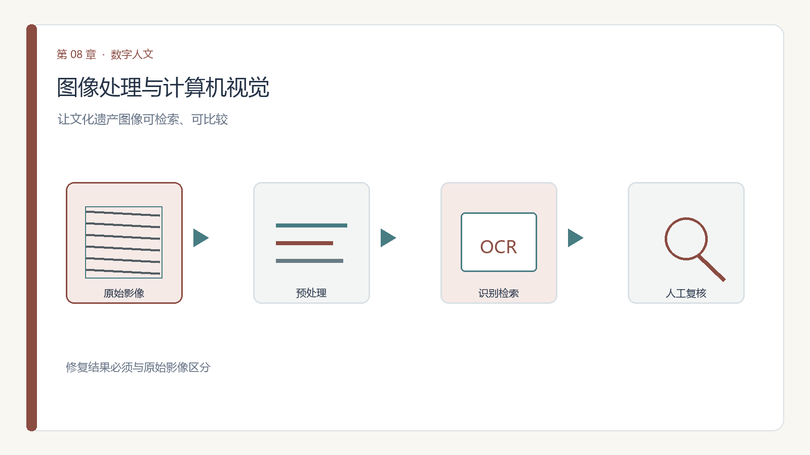

第 8 章 模块八 图像处理与计算机视觉
学习目标：完成本模块后，你应能（1）说明从扫描图像到可用数据的典型预处理步骤；（2）解释 OCR 如何把图像变文本及其对古籍的局限；（3）描述以图搜图与视觉语言模型（VLM）的用途；（4）指出图像处理中的真实性与伦理风险。

8.6 伦理坐标：真实、残缺与伪造（本模块核心能力）
- 色彩真实：修复/上色要标明"此为复原，非原貌"，不把推测当原物；
- 残缺伦理：补全残卷时，补的部分须可辨识，不能让观者分不清"原"与"补"；
- 伪造风险：生成式 AI 能"造"出以假乱真的古画/拓片，发布必须声明。
一条红线：不把 AI 复原或生成的影像冒充原始遗产；任何处理过的图像都标注"处理类型与程度"。
8.11 思政融入（课程思政）
思政融入（课程思政）：文物与文化遗产是不可再生的文化资源，数字化既是保护也是传承。用计算机视觉修复、识别、检索遗产时，必须服务于文物保护与文化自信，坚决反对文物造假、非法交易与对遗产的商业滥用。让技术成为文明的守护者，而非消耗者。
思政案例（课程思政示范案例 / AI 思政课 知识库）：可参照《中医基础理论》课程思政“中国传统文化”的切入点——数字化修复与保护，是对文明记忆的守护而非消费。
第二部分 课程内容
理论8.1 图像是另一类大宗遗产
碑拓、画作、器物、老照片、地图——图像类数据在模块二单列，是因为它们"读不懂字"却"装着信息"。计算机视觉的任务，是把像素变成可检索、可计量的对象。
理论8.2 从扫描到可用：二值化、去噪与几何校正
原始扫描常有问题：底色不均、噪点、歪斜、光照不匀。常见处理（见本模块 V2.1 的 Analysis of Compressed Document Images for Dominant Skew、Minimum error adaptive RGB calibration in a context of colorimetric uncertainty）：
- 二值化：把彩色页变黑白，突出笔画；
- 去噪：去掉斑点与背景纹理；
- 几何校正：把拍歪的书页拉平。
这些步骤每个都有参数，参数即选择，同样要留痕。
理论8.3 OCR：把图像变文本
OCR（光学字符识别）让碑帖、古籍、老报刊变成可全文检索的文本——这是模块四 NLP 的数据入口。但古籍的异体、残损、无句读、竖排常让通用 OCR 失准，往往需要版刻专用的识别模型或人工校勘。OCR 结果是"近似文本"，不能直接当原文引用。
理论8.4 图像检索与分类：以图搜图
不必先识字也能检索：用特征向量把相似图像聚到一起，能快速找出"同一印版的不同拓本""同一画风的一组作品"。分类模型还能自动标注"这是山水""这是人物"。
理论8.5 视觉语言模型（VLM）：描述与问答
最新的 VLM（如能看图的大模型）可以直接回答"这幅画描绘了什么场景""碑文里有没有提到某年号"。它降低了非专业者的图像分析门槛，但输出需要核对——模型会"自信地编"（幻觉）。
理论8.7 第一次动手：对一张老影像做 OCR + 标注
小练习 8.1（图像处理）：取一张带文字的老照片/碑帖扫描图，先做几何校正与二值化，再跑 OCR 取文本，核对识别错误并标注"哪些字 OCR 读错"；若可用 VLM，让它描述画面并人工纠错。本模块 V2.1 的 Computer vision and cultural heritage、Advanced image analysis for the preservation of cultural heritage 是方法总览，可对照你的预处理流程是否覆盖了"保护优先"的原则。
8.8 第二次动手：用 VLM 给老照片写图注并人工校验
- 目标：在 8.7 OCR 基础上，进一步用视觉语言模型生成图注，再人工抽查准确率。
- 步骤：
- 取 10 张老影像；
- 用 VLM 各生成一句图注；
- 人工核对，标注“准确 / 部分 / 错误”；
- 统计准确率；
- 写 150 字：VLM 在档案图注上可靠吗、何时必须人工。
- 工具：视觉语言模型 API + 表格记录。
- 产出：图注表 + 准确率统计 + 反思。
- 评价量规：图注可用（30%）、人工校验认真（30%）、可靠性判断有据（40%）。
8.10 思考题
- OCR 把碑帖变文本，但会读错。若研究结论依赖这些文本，你如何控制"识别错误"带来的风险？
- 用 AI 给一幅残画"补全"，怎样标注才既有用又不误导？
- 生成式 AI 能造出逼真"古画"。在教材/展览中使用这类图像，应遵循什么透明原则？
第三部分 拓展练习
下表为通过 OpenAlex（开放学术图谱，聚合期刊/会议/预印本）、DBLP（CS 会议期刊，含 SIGIR/UIST/DH/IJDAR/EPIA）、arXiv（预印本）、CrossRef（期刊 DOI 元数据）、CORE（开放获取库）检索到的真实文献，按来源/被引排序，供延伸阅读与实验报告引用。
课堂复现（检索即方法）：下列代码直接调用 OpenAlex 免费 API 复现本模块文献检索（无需密钥）。
import urllib.request, urllib.parse, json
q = 'data science digital humanities'
url = 'https://api.openalex.org/works?search=' + urllib.parse.quote(q) + '&per_page=10&sort=cited_by_count:desc'
oa = json.loads(urllib.request.urlopen(url, timeout=30).read())
for w in oa['results']:
print(w['publication_year'], w['title'], '->', (w.get('primary_location') or {}).get('source', {}).get('display_name'))误用警示：① arXiv 预印本未经同行评审，引用须标 preprint 并追正式版；② 被引数代表影响力非结论正确；③ 商业库（WoS/Scopus/Elsevier/JSTOR/CNKI）本环境无订阅，需机构账号获取后再并入。
与实验衔接：将任一方法对照本模块实验改写数据集或提示词，即可形成有学术依据的结题报告。
第四部分 本章小结
小结8.9 本章小结
带走三件事：预处理三件事（二值化/去噪/校正）、OCR 是 NLP 入口但要校勘、VLM 能问答但会幻觉 + 真实性红线。图像分析让"看不懂的遗产"可计算，但真实性的边界必须守住。
本章配套游戏：碑帖复活